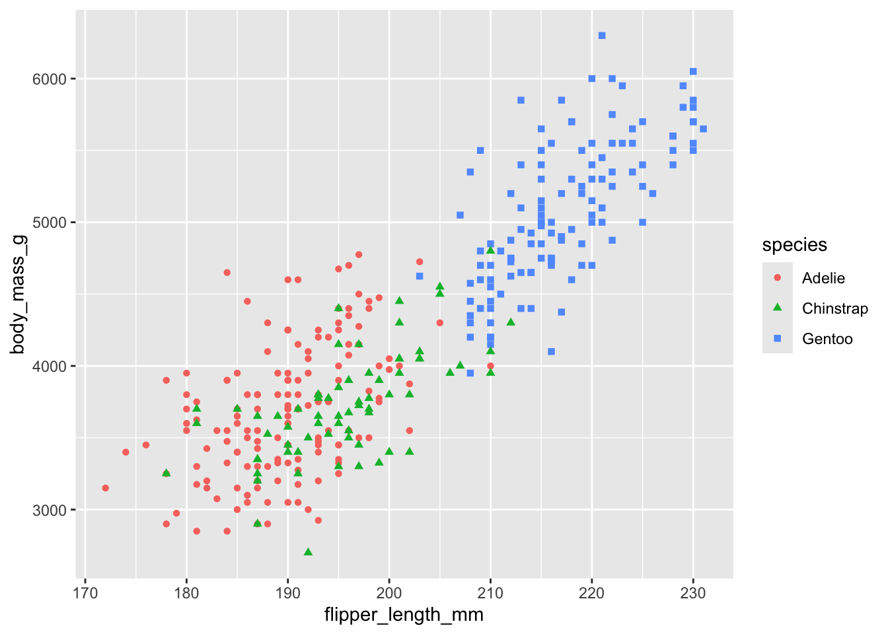

library(tidyverse)
library(palmerpenguins)AE-01 Meet the Penguins
Application exercise
 In this activity, we will meet some penguins, start thinking about data and variables, and see some R code in action. The R package palmerpenguins includes the
In this activity, we will meet some penguins, start thinking about data and variables, and see some R code in action. The R package palmerpenguins includes the penguins dataset which contains size measurements for three species of penguins observed on three islands in the Palmer Archipelago in Antarctica.
Goals
- Introduce RStudio and Quarto documents.
- Learn about datasets and variables
- Introduce basic R code for exploring datasets and variables. Specific R commands used in this activity include:
head,glimpse,count,table,mean,ggplot
Packages and Data
Throughout this course, we will be using the tidyverse package which is actually a collection of many other packages designed to simplify working with data. For this activity, we also need the package palmerpenguins which contains the dataset that we’ll be using.
The following code chunk loads these packages into R.
About the data
The palmerpenguins package includes data that were collected and made available by Dr. Kristen Gorman and the Palmer Station, Antarctica LTER, a member of the Long Term Ecological Research Network established by the National Science Foundation in 1980.
You can find more information about the palmerpenguins package by reading this vignette maintained by Allison Horst (who also drew our friends above).
In the world of R, a vingnette is a detailed description of a package. Looking at a package’s vingnette is a good way to learn the names of the datasets included in a package.
1 A First Look at the Data
Now that we’ve loaded the palmerpenguins package, we can now begin to investigate the data. The data is organized in what we’ll call a data frame. This means that we have rectangular array where each row is an individual penguin (observation) and each column is a particular attribute of penguins (variable).
To see this data, we need to know the name of the dataset. If we were loading a raw data file into R (more on this later) we would choose the name ourselves. But since this data frame was included in the palmerpenguins packgage, it’s already been given the name penguins. We can take a peek by simply typing in the name of this data frame into an R code chunk:
penguins# A tibble: 344 × 8
species island bill_length_mm bill_depth_mm flipper_length_mm body_mass_g
<fct> <fct> <dbl> <dbl> <int> <int>
1 Adelie Torgersen 39.1 18.7 181 3750
2 Adelie Torgersen 39.5 17.4 186 3800
3 Adelie Torgersen 40.3 18 195 3250
4 Adelie Torgersen NA NA NA NA
5 Adelie Torgersen 36.7 19.3 193 3450
6 Adelie Torgersen 39.3 20.6 190 3650
7 Adelie Torgersen 38.9 17.8 181 3625
8 Adelie Torgersen 39.2 19.6 195 4675
9 Adelie Torgersen 34.1 18.1 193 3475
10 Adelie Torgersen 42 20.2 190 4250
# ℹ 334 more rows
# ℹ 2 more variables: sex <fct>, year <int>The result (output) a table (tibble) which shows us the first ten rows of the data frame. When working with data, we typically want each row to be an individual observation (or case), each column to be a variable, and each entry (cell) to be a single value. Data that is in this format is called tidy. A significant part of the work involved in working with and analyzing data is getting it tidy, a process often referred to as “cleaning”.
Other points of view
R gives us many tools for viewing the data. Here are are two other commands that can be useful. If we want to control how many rows we see at once, we can use the head() command.
head(penguins)# A tibble: 6 × 8
species island bill_length_mm bill_depth_mm flipper_length_mm body_mass_g
<fct> <fct> <dbl> <dbl> <int> <int>
1 Adelie Torgersen 39.1 18.7 181 3750
2 Adelie Torgersen 39.5 17.4 186 3800
3 Adelie Torgersen 40.3 18 195 3250
4 Adelie Torgersen NA NA NA NA
5 Adelie Torgersen 36.7 19.3 193 3450
6 Adelie Torgersen 39.3 20.6 190 3650
# ℹ 2 more variables: sex <fct>, year <int>The default is to show six rows, but we can change that by typing something like head(penguins, 20).
Another useful way to look at a dataframe is the glimpse() command:
glimpse(penguins)Rows: 344
Columns: 8
$ species <fct> Adelie, Adelie, Adelie, Adelie, Adelie, Adelie, Adel…
$ island <fct> Torgersen, Torgersen, Torgersen, Torgersen, Torgerse…
$ bill_length_mm <dbl> 39.1, 39.5, 40.3, NA, 36.7, 39.3, 38.9, 39.2, 34.1, …
$ bill_depth_mm <dbl> 18.7, 17.4, 18.0, NA, 19.3, 20.6, 17.8, 19.6, 18.1, …
$ flipper_length_mm <int> 181, 186, 195, NA, 193, 190, 181, 195, 193, 190, 186…
$ body_mass_g <int> 3750, 3800, 3250, NA, 3450, 3650, 3625, 4675, 3475, …
$ sex <fct> male, female, female, NA, female, male, female, male…
$ year <int> 2007, 2007, 2007, 2007, 2007, 2007, 2007, 2007, 2007…2 Summary Statistics
A summary statistic is a single number that summarizes our data in some meaningful way. For example, we might ask:
- What percentage of our penguins are Adelie?
- What percentage of our Adelie penguins were found on Torgersen island?
- What is the average (mean) flipper length of our penguins?
We can use R to help us analyze the data to answer these questions. We might start by counting how many penguins of each species there are.
count(penguins, species)# A tibble: 3 × 2
species n
<fct> <int>
1 Adelie 152
2 Chinstrap 68
3 Gentoo 124We can do something similar to determine how many penguins are on each island.
Two-way tables
To answer our question, it seems we need to dig deeper. Here we produce what’s sometimes called a two-way, or contingency, table. We’ll see these again later in the semester but for now, just make a note of the R code and the output.
table(penguins$species, penguins$island)
Biscoe Dream Torgersen
Adelie 44 56 52
Chinstrap 0 68 0
Gentoo 124 0 0Mean (average)
We’ll have more to say about this later on, but just as one more example of a summary statistic, we can easily calculate means with the following code chunk:
mean( penguins$flipper_length_mm, na.rm = TRUE )[1] 200.9152Notice the na.rm = TRUE in the code. This tells R to ignore any observations for which the variable flipper_length_mm has a value of NA.
3 Visualizing Data
An important tool in understanding and analyzing data is visualization. For example, we can use a scatterplot to help us understand relationships between numerical variables. Let’s look at a scatterpolot that compares body mass and flipper length.
ggplot(data = penguins,
mapping = aes(x = flipper_length_mm, y = body_mass_g)) +
geom_point()Warning: Removed 2 rows containing missing values or values outside the scale range
(`geom_point()`).
R gives us the ability to modify and customize our visualizations a great deal – indeed this is one of the main strengths of R! Let’s add one more feature to our graph. As we know, there are three different species of penguins in our data set – but our scatter plot does not show this!
ggplot(
data = penguins,
mapping = aes(x = flipper_length_mm, y = body_mass_g)) +
geom_point(mapping = aes(color = species, shape = species))Warning: Removed 2 rows containing missing values or values outside the scale range
(`geom_point()`).
Because people can perceive colors differently due to color blindness or other color vision differences and since different devices might display colors in unexpected ways, it’s good practice to not rely on color alone to distinguish points.